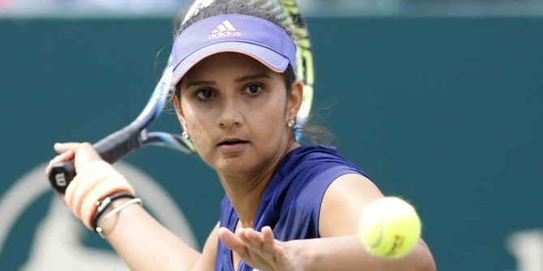

15 November 1986
"You have to dust yourself off after each painful loss and prepare for the next win,day after day"
Sania Mirza was born on 15 November 1986 in Mumbai to Hyderabadi Muslim parents Imran Mirza, a sports journalist, and his wife Naseema, who worked in a printing business. Shortly after her birth, her family moved to Hyderabad where she and younger sister Anam were raised in a religious Sunni Muslim family. Anam is married to cricketer Mohammad Asaduddin, the son of former India national cricket team captain, Mohammad Azharuddin. She is the distant relative of former cricket captains Ghulam Ahmed of India, and Asif Iqbal of Pakistan. She took up tennis at the age of six. She has been coached by her father and also Roger Anderson.
She attended Nasr School in Hyderabad. She later graduated from the St. Mary's College, Hyderabad. Mirza also received an honorary degree of Doctor of Letters from the Dr. M.G.R. Educational and Research Institute in Chennai on 11 December 2008.
2003– Sania won the 2003 Wimbledon Championships Girls`doubles title along with Alisa Kleybanova of Russia.
2004– She was the runner-up at the Asian Tennis Championship.
2005– She became the first Indian woman to reach the 4th round of a Grand Slam tournament at the U.S. Open. Moreover, 2005 turned out to be a great year for her as she reached the third round of the Australian Open. In the same year, she became the first Indian woman to win a WTA singles title.
2006 – At the 2006 Doha Asian Games, Sania won the silver in the women`s singles category and the gold in the mixed doubles with Leander Paes.
2007 – At the 2007 U.S. Open, Sania reached the 3rd round in the singles and reached the quarterfinals of the mixed doubles with Mahesh Bhupathi.
2008 – Sania qualified for the third round at the Australian Open. She was also the runner-up in the mixed doubles category with her partner, Mahesh Bhupathi.
2009 – Sania bagged her first Grand Slam (mixed doubles) title at the Australian Open with Mahesh Bhupathi. She also reached the Pattaya Women`s Open Tournament final held in Bangkok.
– Won the Guangzhou International Women’s Open held in China.
2011 – She was the runner-up at the French Open women’s doubles with Russia’s Elena Vesnina.
2012 – Won the mixed doubles French Open title with Mahesh Bhupathi.
2014 – Won the US Open Mixed Doubles title with Brazilian Bruno Soares and was the runner-up at the Australian Open with Horia Tecău from Romania.
2015 – Won the Wimbledon and French Open women’s mixed doubles title with the current world no. 3, Martina Hingis.
2016 – She was the runner-up at the mixed doubles event of the French Open with Croatian Ivan Dodig and she won the women’s doubles title at the Australian Open with Martina Hingis.
Sania has represented India at the Olympics 4 times – in Beijing (2008), London (2012), Rio (2016) and Tokyo (2021). She earned the gold medal for India at the 2006 and 2014 Asian Games, and the 2003 Afro-Asian Games.
2022 – She made it to the semifinals stages at the WTA 1000 Qatar Open and the Italian Open, as well as the French Open third round, partnering with Lucie Hradecká.
Canadian Open: She reached the quarterfinals of a WTA 1000 level partnering Madison Keys where they beat top seeds Elise Mertens and Veronika Kudermetova. In the next round, they beat Sofia Kenin and Yulia Putintseva to reach the semifinals.